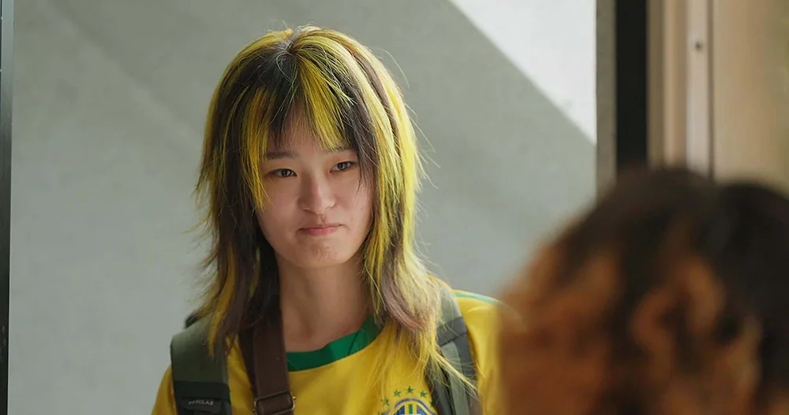
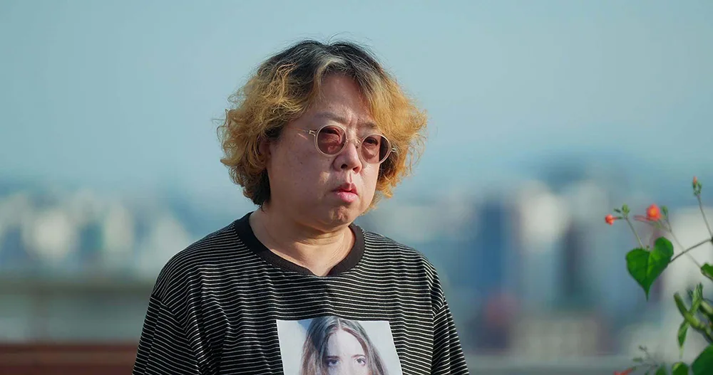
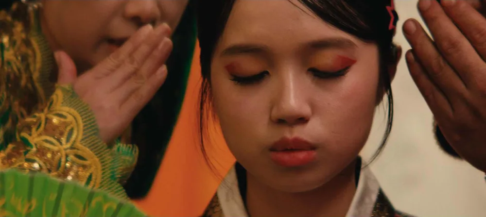
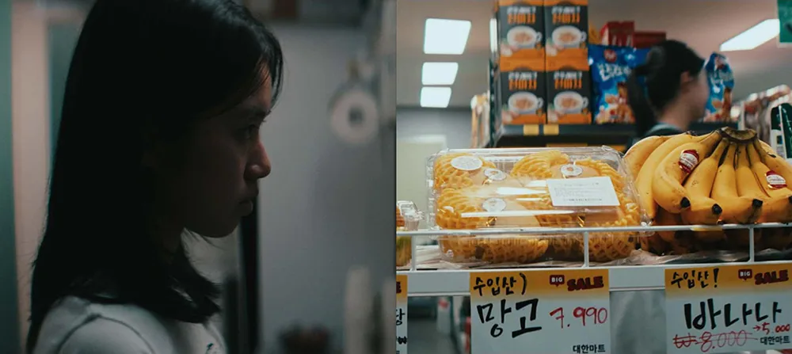

한국영화가 분야별로 회복을 위해 고군분투하고 있는 시기다. 이럴 때일수록 더 많은 신인 창작자들에게 더 큰 기회의 문을 열어야 한다는 목소리가 커지고 있다. SNS와 온라인동영상플랫폼(OTT)을 활용한 다양한 채널들이 생겨나고 있는 시기, 새로운 영화와 콘텐츠를 모색하는 한국 영화산업이 긍정적인 변곡점을 맞으려면 신인 감독에 대한 발굴과 투자는 아무리 강조해도 부족하다. 모든 가능성은 열려 있다고 하지만, 업계와 신인들이 직접 만날 수 있는 플랫폼은 더 늘어나야만 한다. 무엇보다 단편영화를 만들고 장편영화를 준비하는 신인 감독들이 산업 안으로 들어오기 전, 학교와 시스템 안팎에서 어떤 경험을 하는지 그들의 목소리를 직접 듣는 일도 필요하다. 올해 22회 미쟝센단편영화제(이하 미쟝센영화제) 최우수 작품상 수상자들로 주목받은, 영화 <선희이모>의 위은경·손광민, <월남보살>의 김근호, 세 명의 신인 감독에게 물었다. 지금 어떻게 영화를 찍고 있는지. 단편영화를 찍으며 영화계에 존재 증명을 시작한 모험이 어떻게 더 넓은 세계와 만나기를 기대하는지.

왼쪽부터 <선희이모>를 만든 손광민 감독과 위은경 감독,
<월남보살>의 김근호 감독
Q <월남보살>은 다문화 가정과 무속을, <선희이모>는 돌봄과 재회를 다룬다. ‘가족’이라는 소재를 전혀 다르게 풀어냈다. 이 이야기들은 어디에서부터 출발했나?
<월남보살> 김근호 감독(이하 김근호) 해외 영화제에 가고 싶다는 마음에, 한국적이면서도 해외에서 관심 많은 무속을 소재로 삼았다. 무속이 유행인데 여기에 디아스포라를 섞어 보자는 접근이었다. 평소 사회적 문제에도 관심이 많은데 최대한 대중적이고 유머러스하게 풀고 싶은 목표도 있었다. 그 두 가지가 맞아떨어진 기획이 <월남보살>이다. 내 두 번째 단편이다.
<선희이모> 위은경 감독(이하 위은경) 영화처럼 나를 키워준 이모가 계신데, 오랜만에 만났더니 유기견을 키우고 계셨다. 다른 사람은 다 무서워하는 강아지가 이모만 졸졸 따라다니며 안겨 있더라. 이모의 모습에서 조금 쓸쓸함도 느꼈고. 그 감정이 계속 기억에 남았다. 영화 속 동물병원도 실제 우리 동네 동물병원인데, 강아지를 안고 다니시는 미용사분 모습에서 이모가 떠올라 글을 쓰기 시작했다.
<선희이모> 손광민 감독(이하 손광민) 위은경 감독이 글을 쓰기 전에 나눈 대화 속에서 작위적이지 않은 사랑의 감정을 발견했다. 좋은 영화가 될 거라는 촉이 왔고, 이 작품을 꼭 만들었으면 좋겠다고 얘기했다.
Q 이전 작품에서 경험했던 시행착오가 <월남보살>과 <선희이모>를 만드는 데에 도움이 됐나?
김근호 완전히 도움이 됐다. 단편은 영화제에 가지 못하면 관객을 만나기가 거의 불가능한데, 내 첫 단편은 아무 영화제도 초청받지 못했다. 관객을 즐겁게 해 주겠다는 마음보다 내 만족에 가까웠던 탓 같다. 그때 경험 때문에 이번에는 다문화라는 소재를 어떻게 대중적으로 풀지 더 고민했다.
손광민 <선희이모>는 인물들이 살아 있다고 느끼게 하는 게 중요한 영화라고 생각했다. 이전 작품들에서 배우 연기를 과장 없이 차분하게 가라앉히는 연출을 해 왔는데, 촬영감독님과 전작 <파도가 지나가고>(2024) 이후 두 번째 합을 맞추다 보니 더 안정감 있게 작업할 수 있었다.


애견 미용사 선희(정호정)가 10년 만에 찾아온 조카 서연(위은경)과 재회하며 벌어지는 일을 다룬 <선희이모>는 가족 사이 사랑의 감정을 이야기한다.
Q 각자 제작 여건은 어땠나? 예산과 인력의 한계가 연출에 구체적으로 어떤 영향을 줬을까?
김근호 <월남보살>은 한국예술종합학교(이하 한예종) 전문사 과정 졸업 조건인 단편 두 편 중 첫 작품으로, 학교 프로젝트였다. 로케이션과 CG 등이 필요한 기획이었는데, 다행히 몇 군데 지원 사업에 뽑히고 후원해 준 친구들도 있어서 만들 수 있었다. 제작비 3천500만 원으로 서울 2회 차, 지방(구례) 3회 차로 총 5회 차로 찍었다. 한예종이 구례군과 협업을 하고 있어서 숙박·식비 지원도 받았다. 학교의 장비와 인력의 도움도 받았고. 예비 회차가 없다 보니 제때 못 찍으면 ‘망한다 + 추가 제작비’라는 생각에 압박감이 심했다. 현장에서 기도를 열심히 했다.(웃음)
위은경 손광민 감독과 나는 동국대학교 연극학과 연기 전공, 서울예대 연기 전공이다. 입시학원에서 만났고, 함께 연출을 하게 됐다. <선희이모>는 영화 하는 친구들이 조연출, 연출팀, 미술팀으로 무보수로 도와줬다. 제작비 650만 원에 인건비가 들지 않은 셈이라서 너무 고마웠다. 정해진 날에 다 찍어야 한다는 게 체력적으로 많이 힘들었다. 촬영 전에 방향성을 계속 맞췄다. 현장 리허설은 손광민 감독 주도로 디렉팅하고 나는 서연을 연기하며 스태프 준비 상황을 챙겼다.
손광민 <선희이모> 스태프는 이미 나와 함께 작업해 온 동료들이라 잘 통했다. 현장에서의 애로 사항이나 연출적 고민을 함께 토론하되 최종 결정은 연출이 하는 걸 존중했다. 콘티를 다 만들고, 중요한 연출 포인트를 다 상의한 후 촬영했다. 시나리오를 직접 쓰지 않았기에 오히려 거리를 두고 채워 넣을 지점을 고민할 수 있었다.
Q 김근호 감독의 <월남보살>은 학교 수업 과정 안에서, 위은경·손광민 감독의 <선희이모>는 학교 밖에서 사비를 털어 독립적으로 만들었다. 단편영화를 만들면서 각자 경험한 자유로움과 어려움이 있다면?
위은경 학교 밖에서 단편영화를 만드는 게 딱히 단점이라는 생각은 안 든다. 영화를 만든다고 주목받는다는 보장이 없는 건 학교 안팎이 마찬가지니까.
손광민 단점은 ‘텅장’이다.(웃음) 스무 살 때부터 감정 해소를 위해 영화를 찍어 왔는데, 찍을 때마다 통장이 텅텅 비는 게 화가 나면서도 또 찍게 되더라. 처음 스태프를 꾸린 전작 <파도가 지나가고> 때 제대로 관객을 만나고 싶어서 큰돈을 썼다. 첫 영화를 찍은 지 8년 만에 치른 수업료였다. 그간 당근마켓에서 산 카메라, 아버지가 선물한 150만 원짜리 카메라, 아이폰으로 영화를 찍었다. 관객들을 만나고 영화에 대해서 무언가 말이 오고 간다는 게 굉장히 값지다는 것을 이제야 알게 됐다.
김근호 영화 아닌 전공으로 대학을 졸업하고 감독이 되겠다는 꿈을 품고 있다가 재수를 해서 한예종에 왔다. 영화과 출신도 아니고 영화를 배워 본 적도 없어서 근본이 없는 것 같다는 막막함이 있었으니까. 한예종에서 만난 사람들, 여기서 주어진 기회 같은 게 좋았다. 한편으로 학교에 들어왔다는 행복감에 취해 있으면 눈 뜨고 코 베일 수 있겠다는 생각이 들어서 공포감을 많이 느꼈다. 영화 학교에 온다는 건 당연히 학위나 졸업장이 목표는 아닐 텐데, 나 스스로를 증명해야 한다는 부담감도 컸다. 작품 한 편 한 편을 하나의 과제로만 생각하고 어영부영 학부 졸업장 따는 것처럼 되지 않을까 항상 두려웠다. 그 두려움에 맞서려고 노력했던 것 같다.


신병을 앓는 한-베 혼혈아 수연(권유경)의 이야기를 담은 <월남보살>은 무속이란 소재에 사회적인 문제를 섞어 위트 있게 풀어낸다
Q 미쟝센영화제 수상 이후 달라진 것이 있나? 투자자·제작사 미팅이나 다음 작업 제안 등 업계 반응이 궁금하다. 현재 넷플릭스에서 수상작들을 공개 중이니 주변 반응도 있을 것 같은데?
손광민 넷플릭스 공개 이후 1일 1블로그, 왓챠피디아를 정독했다.(웃음) 관객들이 이런 지점까지 봐주시는구나 확인하는 게 너무 좋았다.
위은경 쇼박스에서 수상작 감독들을 한 번씩 다 만났다고 들었다. 나와 손광민 감독도 만났고, 예정된 제작사 미팅도 있다.
김근호 단편은 보통 영화제 관객만 보고 끝나는데 넷플릭스 공개로 훨씬 많은 분이 봐주셔서 정말 좋았다. 나도 1일 3왓챠피디아, 심할 땐 1일 10왓챠피디아를 봤다.(웃음) 나쁜 평조차 즐거웠고 더 정진하자는 다짐도 했다. 쇼박스와 만났고, 그 외 몇 군데서도 좋은 제안을 해 주셨다. 영화제에 업계 관계자와 넷플릭스가 함께한다는 것 자체가 신진 창작자에게 큰 기회였던 것 같다. 뒤풀이에도 매니지먼트·제작사 분들이 오셔서 실제 대화가 이루어졌다. 단편영화 감독들이 주인공이 되는 자리가 마련된다는 것 자체가 고무적이었다.
Q 업계에서 말하는 신인 발굴 방법에 대해서는 어떻게 느끼나?
김근호 나는 두 편의 상업영화 연출팀으로 일하고 학교로 왔다. 연출부에서 조연출, 감독이 되는 기존의 도제식 방법보다 내 글을 쓰고 단편을 만드는 게 더 데뷔할 가능성이 크다고 생각했다. 단편에서 상업영화 감독으로서의 잠재력을 보여 줘야 한다는 마음으로 <월남보살>을 찍었고, 지금 찍는 장편도 그렇게 접근하고 있다. 단편은 단편다워야 한다는 말, 독립영화들이 너무 “상업영화로 보내 주세요”라면서 기를 쓰는 것 같다는 평들도 있더라. 시장이 계속 어려워지다 보니 젊은 창작자들이 “저 여기 있어요!”를 외칠 기회 자체가 귀해서 그런 경향이 생기는 것 같다. <백룸>의 사례를 많이 얘기하는데, 솔직히 할리우드와 한국의 시장 규모 자체를 비교할 수 없고, 한국에서 그런 사례가 나오기는 어렵지 않을까 생각한다.
위은경 시장이 실질적으로 어떻게 돌아가는지 제대로 겪어 보지 않아 쉽게 말하기는 어렵다. 다만 미쟝센영화제 포럼 ‘딥 포커스: 인더스트리 토크’에서 한 패널이, 제작사·투자사에 내 영화를 한 줄로 설명할 수 있어야한다고 했던 얘기가 기억에 남는다. 내 영화의 소중한 지점을 그들과 공유할 수 있다면 그 부분이 작품이 되는 과정에서 더 커질 수 있다는 말처럼 들려서 좋았다.
Q 단편영화 생태계를 살리기 위해서는 어떤 지원 정책이 필요하다고 보나?
위은경 제주도의 단편영화관 ‘숏트롱시네마’에서 <선희이모>가 한 달 넘게(5월 4일~6월 30일) 상영을 했다. 이전까진 단편영화를 이렇게 길게 상영하는 곳이 있는 줄 몰랐다. 이런 지역 공간들에 대한 지원이 많아졌으면 좋겠다. 한예종 출신 감독님들의 3분 영화들을 묶어 상영한 영화 <당신이 영화를 그만두면 안 되는 30가지 이유>를 보았는데, 이렇게 기획된 영화들이 더 나오면 좋겠다는 생각도 한다. 서울시 은평구에서 진행하는, 주민들이 몇 주에 걸쳐서 단편영화를 만드는 프로그램에 방문한 적도 있다. 영화인뿐만 아니라 영화에 관심 있는 시민들이 자신의 이야기로 단편영화를 만들고 상영해 보는 프로그램을 만드는 것 또한 단편영화, 독립영화의 벽을 낮추고 가깝게 다가갈 수 있는 좋은 방법이라고 생각한다.
김근호 영화진흥위원회(이하 영진위)를 비롯해서 많은 영화제, 지자체, 문화재단 등에서 진행하는 단편영화 제작 지원 사업이 많다. 단편영화를 상영하는 크고 작은 영화제들도 이미 포화 상태인 것 같다. 다만 단편영화가 주로 고관심층에게만 소구하기 때문에 대중적인 인지도는 많이 떨어지는 듯하다. 같은 영화가 여러 영화제에서 상영되고, 같은 관객이 그 영화를 다시 보러 오는 구조에 가까운 것 같다. 더 확장성이 있으면 좋겠다. KBS 1TV 프로그램 <독립영화관>도 좋은 모델이고, 넷플릭스, 웨이브, 티빙, 왓챠 같은 OTT 플랫폼에서 더 많은 단편영화를 공개할 수 있는 기회가 열리면 좋겠다. 보다 많은 관객이 단편영화를 볼 수 있는 창구가 생긴다면 자연스럽게 제작 여건도 개선되지 않을까? 정책적으로 대중적인 유통 창구를 마련해 주면 좋겠다.
Q 앞서 얘기됐듯이 미국에서 10대 때부터 유튜브에 영상을 올리던 케인 파슨스가 20세에 A24 사상 최연소 감독으로 발탁된 후 <백룸>을 연출해 흥행에 성공했다. 온라인 창작자가 곧바로 상업영화 감독이 되는 해외 사례를 보면서 어떤 생각이 들었나? 한국에서도 비슷한 경로가 가능할까?
위은경 <백룸>은 <백룸>이어서 성공한 게 아닐까?(웃음) 케인 파슨스는 이미 전 세계를 휩쓴 유튜브 콘텐츠로 사람들을 사로잡을 파급력을 증명한 사람이었으니까.
김근호 한국에 그런 유튜버가 있어도 제작사·배급사가 기회를 안 줄 것 같다.(웃음) <백룸>이 가능했던 건 A24가 젊은 유튜버에게 투자할 수 있는 돈이 있었기 때문이라고 생각한다. 한국에서 케인 파슨스처럼 주목받는 사람이 있다면 물론 영화를 찍을 수 있겠지만 <백룸> 같은 규모는 아닐 것 같다. A24는 상업성과 독립성을 둘 다 잡고 가면서 팬덤도 두터운데, 여기에 미국 시장 규모와 해외 세일즈까지 더해진 결과다. 한국에서도 그만한 글로벌 팬덤을 가진 제작사·배급사가 생기면 <백룸> 같은 영화를 만들 수 있을 거다. 그러나 애초에 주어진 환경이 다르니 우리의 제약 안에서 뭘 할 수 있을지 고민하는 게 더 맞는 것 같다. “왜 나는 185cm의 ‘존잘남’이 아닌 거지?”를 고민하는 삶은 너무 불행하지 않나.(웃음)
Q 영화가 왜 좋은가? 많은 신진 창작자들이 숏폼 드라마, OTT 시리즈, 유튜브, 게임 쪽으로 가려고 하는데, 영화를 계속 붙잡고 싶은 이유는?
김근호 넷플릭스 등장 때도 그랬고, 더 거슬러 올라가 TV 드라마가 생기자 그에 대한 영화의 대응책으로 시네마스코프가 나왔을 때도 비슷한 논의가 있었을 거다. 영화는 그런 시기들을 뚫고 존속해 왔고, 지금은 영상 매체 안에서의 어떤 퀄리티나 품위를 상징하는 단어가 되었다고 생각한다. 일본 영화계의 경우 영화를 하면 돈을 많이 안 주니까 배우들이 돈은 광고를 찍어서 벌고 영화를 계속한다는데, 앞으로 영화가 더욱 그런 인식 속에서 발전하지 않을까. 영상 매체들의 포맷은 계속 바뀌겠지만 영화는 ‘영상 매체의 근본’으로 포지셔닝되어서 앞으로도 계속될 거라고 믿고 있다. 그래서 영화를 매력적으로 생각하는 것 같다.
위은경 영화는 모든 요소가 딱 맞아떨어져야 관객이 즐길 수 있어서 어렵지만, 맞아떨어졌을 때의 파급력은 숏폼이나 시리즈가 절대 가질 수 없는 것이다. ‘숏폼의 시대’가 왔어도 사람들은 2시간 동안 나를 후벼 파는 경험을 기대하며 좋은 영화를 보러 간다. 나도 그런 영화를 기다리는 관객이고, 그런 영화의 일부가 되고 싶어서 계속 영화를 만드는 것 같다.
손광민 거창하게 들리겠지만 내 삶과 영화는 뗄 수가 없다. 내가 힘들 때 글을 써서 영화를 찍고 그걸로 질문을 던졌다. 감독이 되고자 해서가 아니라 그때 심정을 담고 싶어서 무작정 찍었는데, 이상하게 감정이 해소되고 다음 질문이 생겨 계속 찍게 됐다. 영화는 어쩌면 내가 세상에 말하는 방법 같다. 영화는 질문을 던지는 일인 동시에 주말에 극장에서 체험하는 재미이기도 하다. 최근에 그 두 가지가 공존할 수 있다는 걸 깨달았다. 질문을 던져서 관객들이 좋아하고 함께 생각할 수 있는 영화를 만들고 싶다.
김근호 요새는 영화가 너무 성역화되면서 오히려 대중과 멀어지고 있다는 생각도 든다. 영화를 지켜야 한다는 식의 담론들은 너무 많은데 신인 창작자로서 우리가 마주하고 있는 콘텐츠 생태계는 그렇지만은 않은 것 같다. 주변을 보면 숏폼 드라마나 BL 드라마로 커리어를 시작하는 친구들이 있다. 거장들도 OTT나 숏폼으로 진출하는데 ‘영화적이다’라는 의미가 진짜 무엇인지 생각해 봤으면 한다.
Q 다들 장편영화 연출을 고민하고 있는 것으로 안다. 역시 시나리오 개발, 제작, 상영, 유통 등 여러 단계에서 다양한 지원이 필요할 것 같다. 현시점 가장 절실한 지원은 무엇일까?
손광민 단편은 제약 속에서 아르바이트를 해서라도 찍을 수 있지만 장편은 그렇게 안 될 거고, 가장 절실한 건 역시 제작비겠지. 지원해 주실 수 있다면 당연히 많이 해 주시면 좋겠다.(웃음) 제도적 지원에 대해서 더 공부하고 깊은 고민을 해야겠다.
김근호 지금 장편을 하고 있는데, 역시 지원 제도가 있음에 정말 감사하다.(웃음) 영진위 한국영화 중예산 제작 지원 사업 등 지원 정책은 이미 촘촘하게 마련돼 있다고 생각하는 편이다. 더 알려지고 지속됐으면 한다. 간혹 영진위 사업을 욕하는 분들도 있더라. 그렇게 만들어진 영화를 누가 본다고 몇 억씩 국비를 지원해 주냐면서. 솔직히 봉준호 감독님의 첫 단편이나 첫 장편영화를 본 사람이 얼마나 많겠나? 그래도 시행착오를 겪을 수 있었기 때문에 좋은 작품들을 만드는 좋은 감독이 되셨다고 생각하는데, 그런 도전을 겪을 수 있게 해 주는 지원 사업에 대한 인식이 달라졌으면 좋겠다. 그리고 정권이 바뀌어도 지원이 계속될 수 있는 시스템이면 좋겠다. ‘이 지원 사업이 내년에 없어지면 어떡하지?’ 하는 걱정을 하지 않았으면 좋겠다.
<선희이모> 예고편
<월남보살> 예고편
Q 준비 중인 차기작을 통해서는 어떤 이야기를 전하고 싶은가?
김근호 앞서 말했듯이 한예종 전문사 장편 제작 지원에 올해 3월 당선됐다. 10월 촬영을 해서 11월에 종료하고 내년 영화제에 출품하는 게 목표다. 코미디 휴먼 드라마다. 어느 보수적인 포차 사장님이 자기 가게의 턱을 없앤다. 휠체어를 이용하는 장애인을 비롯해 인근 대학 인권 동아리 친구들을 단골로 붙잡으려다 뜻하지 않게 ‘배리어프리 정책’을 펼치게 된 거다.(웃음) 그 후 포차 사장님의 보수 성향이 폭로되면서 벌어지는 코미디다. 100분 정도 러닝타임으로 계획 중이다. 상업영화 기획도 준비하고 있고, <월남보살>의 장편화도 고민하고 있다.
위은경 8월에 새 단편을 찍으려고 준비 중이다. 전부터 쓰고 싶었던 장편영화 소재도 있는데, 미쟝센영화제 때 여러 회사의 명함을 잔뜩 받았으니 써서 보여 드리고 싶은 생각이 있다. 어머니와 아들이 세탁소를 운영하는 이야기다. 아들은 자신이 잃어버린 걸 스스로 알아채지 못한 채 살다가 그걸 찾아가려고 하는 남자다. ‘잃어버린 것들에 대한 영화’라고 생각하고 있다.
손광민 장편을 찍기 전에 먼저 단편으로 찍어 보려는 이야기가 있다. 새마을운동 시기, 산속 기도터의 당산나무를 베러 가는 과정을 엄청난 저예산으로 찍으려고 한다. 앞으로 내가 하고자 하는 이야기와 맞닿아 있다.